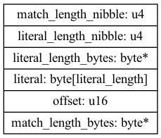

LZ4 Compression
Table of Contents
1. The LZ4 block format
An lz4 compressed block contains multiple sequences. Each sequence can contain two parts. A literal string which can be copied into the output. And a match which points to a substring in the uncompressed output.

A sequence starts with a token byte that contains two 4 bit nibbles. The lower bits contain the literal's length. Literals of lengths 14 bytes and less can be represented by the nibble. Longer lengths require additional length bytes.
let rec read_length_bytes data = let b = Reader.read_byte data in if b < 255 then b else b + read_length_bytes data let read_length length_nibble data = if length_nibble < 15 then length_nibble else length_nibble + read_length_bytes data
If the value of the length nibble is less than 15 no extra bytes are required.
read_length 14 (Reader.of_string "")
Line 1, characters 0-11:
1 | read_length 14 (Reader.of_string "");;
^^^^^^^^^^^
Error: Unbound value read_length
If the length nibble is 15 an extra byte will be read and added to the total length.
read_length 15 (Reader.of_string "\x00")
Line 1, characters 0-11:
1 | read_length 15 (Reader.of_string "\x00");;
^^^^^^^^^^^
Error: Unbound value read_length
If the byte read is 255 then 255 is added to the total length and an extra byte is read.
read_length 15 (Reader.of_string "\xFF\x03")
Line 1, characters 0-11:
1 | read_length 15 (Reader.of_string "\xFF\x03");;
^^^^^^^^^^^
Error: Unbound value read_length
Once the length of the lteral is calculated the bytes can be copied from the sequence and appended onto the uncompressed buffer.
let copy_literal data length buffer = let bytes = Reader.read_n_bytes data length in Buffer.add_string buffer bytes
let buffer = Buffer.create 0;; let data = Reader.of_string "copied literal";; copy_literal data 14 buffer;; Buffer.contents buffer
The second part of the sequence is the match. The match copies bytes from the uncompressed buffer and appends them to the bufffer. The bytes are copied from an offest up to 65535 bytes before the current end of the buffer. The match length is calculated in a similar manner to the literal length, using extra match lenght bytes if required.
let copy_match match_length_nibble data buffer = let offset = Reader.read_u16_le data in let match_length = read_length match_length_nibble data in let matched = Buffer.sub buffer ~pos:(Buffer.length buffer - offset) ~len:match_length |> Bytes.to_string in Buffer.add_string buffer matched
let buffer = Buffer.create 0;; Buffer.add_string buffer "copied match bytes ";; let data = Reader.of_string "\x13\x00\x03";; copy_match 15 data buffer;; Buffer.contents buffer
copied match bytes
2. Compression
Compression works by finding matching substrings. A hashtable can speed up the search of substrings.

In the example the entry in the hash table for the string "cata" points to index 0. The literal "catamaran and " is copied into the first sequence, The prefix "cata" is found in the hash and the string "catamaran" matches the string at index 0. It is used t construct the hash. "s end" is a five character literal that marks the end of the block.